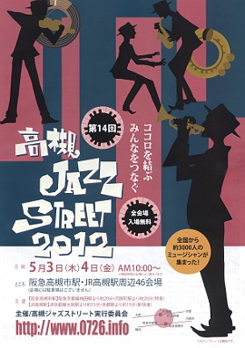
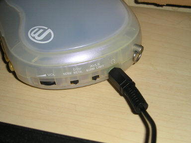
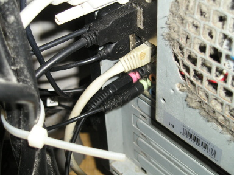
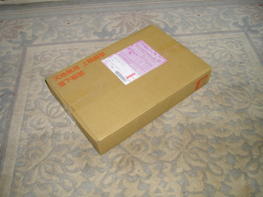

2012 年
05 月 01 日 ( 火 )
自分はふだんはミニマル系の音楽は聴かないのですが、ちょっとこれだけは例外でハマっています。
ミニマルは聴かないっていうけど Ravel の Bolero は？という声が聞こえてきそうですが Bolero は別格です。
もう一つミニマルっぽいけど、ちと違うの。ジャンルとしてはロックになるのかな。ここのとろこずっと頭の中で鳴ってる。
05 月 05 日 ( 土 )

昨日高槻ジャズストリートに弟と行ってきました。これはそのメモになります。
まずは AM 12:00 頃に JK カフェにころがりこんでビールを飲みながら古い Pearl の 3 点セットを眺め倒してました。スネアスタンドのアームの先っぽが樹脂製でなくて金属製！！セットも年代物。セットの名前をメモしておかなかたのが悔やまれます。
12:20 頃にプロテクション・ラケットのスネアケースとシンバルケース ( こちらはメーカーを未確認 ) を抱えたイケメンが来店。12:30 過ぎくらいからバンドのセッティング開始。そこでドラマーさんがペダルを持ってきてないことが判明。すぐさま店の奥から YAMAHA のペダルが。ちなみにハイハットスタンドも YAMAHA。
12:50 くらいからドラムス、ギター、キーボード、ボーカルのカルテット編成の TOT+K ※1 がスタート。スタンダード・ナンバーを演ってらっしゃいました。ドラマーのイケメンの方がこまかい技をいろいろ繰り出されていて勉強になりました。シンバル類がよくわからんかったのですが、あのラインは SABIAN っぽいなぁ、などと思いましたです。勉強になったと書きましたが、もちろん楽しみました。
※1 調べたところ金沢琴美 with 竹田オルガントリオということで Takeda Organ Trio feat Kotomi Kanazawa だったようです。ドラマーの堺貴洋さんのサイトで知りました。
TOT+K さんが終了して JK カフェを後にして市民グランドに向かいます。
にしても天気があまりよくないのに、今年は去年より人が多かった。年々人が増えてきますね。なのでいろんな人も増えてきていますが、それはまた後で。
で、市民グランドに向かう途中で姉妹都市センターでの演奏の音も聴こえてきますが、昔の山下洋輔トリオタイプのフリージャズを演っていて、いまさらこの歳であのタイプのフリージャズもなぁ、と思ってスルーします。
さらに先にすすんでカトリック高槻教会。なんと二日目はここでは演ってないんですね。あれぇ？と思いながらさらに市民グランドに向かいます。
それで現代劇場の前を通る時に弟にここでもやってるよ〜とか説明しているうちに、市民グランドと野見神社からの音が。弟の琴線に触れる音が聴こえたのか弟が野見神社に行きたいとのことで、しばらく野見神社で観てました。
が、だれがプレイしてるのかがわかんない。パンフレットを見るとこの時間は演ってないはずなんだけど。リハだったのかしらん。
で、市民グランドに。
何か食べるなら店があるよ〜、とか一昨年から椅子とテーブルがでるようになったよ〜とか、それまでは全員立ち見だったんだよ〜とか弟に説明していたのですが、もるつオーケストラさんには申し訳ないけど歌謡曲をロック調にアレンジした世界に入り込めなくてすぐに城跡公園に移動。
城跡公園では関大の中高等部の子たちがラテン風の曲をプレイしてました。外人の先生のティンパレスとカウベルの音が通り過ぎてアンサンブルのバランスががががが、と思いましたが静かに見守ります。ドラムの男の子はうまかったです。数小節のドラムソロもあって、いいフレーズを叩いてました。ただなんか楽しそうじゃなかった ＞＜
で、とりあえず昼飯を食いにいくことに。現金がないということでまずはコンビニに金を下ろしに三千里。
コンビニにたどりつくまえに最初に姉妹都市センターの PianoDelic さんの演奏でつかまって、さらに阪急高槻市駅コンコースの演奏と噴水広場の演奏でつかまってしまって、金を下ろして昼飯にありついたのが 15:00。
それから再び市民グランドに向かったのですが、再び弟が野見神社の札幌ジャズほるもんずさんの音につかまりました。Sax の音が琴線に触れるようです。自分もホーンが入った音楽は大好きです。
16:40 頃に市民グランドに移動。目的はもちろん Flide Plide！！
一つまえのバンドが終って司会者さんにインタビューを受けていて、そのインタビューの終り近くで司会者さんが「次はいよいよみなさんお待ちかねの Fride Plide のお二人が登場するわけですが」と口にした途端、パイプ椅子に座っていた人達、立っていた人達がザーっと音をたててステージ直下にゲルマン民族の大移動www
ステージ上にまだいらっしゃった前のバンドの方が「なにこの温度差www」とか笑いながらステージ下をながめてましたwww
Fride Plide なので仕方がないっすwww
自分と弟も空いたスペースに移動しましたですよ。
お二人が登場するまでの時間はテックさんと音響さんのセッティング、チューニング、チェックをガン見させていただいていました。テックさんがステージ上から 250 切ってくださいとか、800 切ってくださいとか切ったぶんあげてくださいとか、そういったやりとりと何をやっているのかガン見させていただいていたのですが…
「立ってる人は座りましょう！！後の座ってる人が見えません！！」
まぁ、そんな声が背後から。
ところが誰も座る気配がない。
それも当然で、文字にすれば穏やかそうに見えますが、口調は上から目線の超命令口調。怒声といってもいい。
というか酒をかっくらってふんぞり返って椅子に座っているその声の主とその取り巻きおばはん連中をのぞいてパイプ椅子軍団は、みんなステージのそばに椅子ごと移動してます。で、このグランドの会場は元々立ち見会場だから、ゲルマン民族化するのはそれは非常に正しい行動www
「立ってみるのはマナー違反だから座るべきだ！！」とおっさんの怒声。
「異議なし！！」「異議なし！！」「賛成！！」と取り巻きのオバハン連中の怒声のシュプレヒコール。
そんなシュプレヒコールがくどくどくどくどくどくどとうんざりするくらい繰り返されるですよ。
正直その場違いなシュプレヒコールの繰り返しにみんなムカつきましたですよ。みんな大人だからライブで熱くなっても喧嘩にはしないけど。
このグランドは本来立ち見会場だし、このグランドでのライブはお上品に座って聴くものじゃないし、それに Fride Plide の熱いライブを座ってお行儀良くご観賞でもすんのか！？ってのもあるし、それより立って熱くなれよってのもあるし ( もちろん無理強いはしないけど )、けっきょく自分たちだけ椅子にふんぞり返って酒のんで聴きたいって欲望オーラが全身から出てんじゃん！！酒のんで椅子に座って踏ん反り返ってえらそうなこと言ってんじゃねぇよ！！ってのもあるし、他人との合意をとろうとすらしねぇその上から目線のえらそうな態度ってなんなの！？ってのもあるし、シュプレヒコールならどっかのでイデオロギッシュなデモででもやれよってのもあるし、なに人の肩つかんでんだよ！？おまえヤーサンか！？ってのもあるし、おまえら TPO って知ってんのか！？ってのもあるし、そんなわけで、みんなそいつらにムカついてました ( 一部個人的なムカつきも含みますwww )。
普段のジャズストの市民グランドでのステージでは、みんな普通に踊ったりするしね。けっこうお歳をめしたじいちゃんがノリノリでステップを踏んだりするのがこの会場でのライブだし！！
実際にみんなマナーが悪いかっていうと、そんなことはぜんぜんなくて、おっさんとおばはんから離れたところで観ていた車椅子の人の周囲のみんなその人が見やすいように座ったり気をくばってた。みんな優しいよ？
大昔の教科書に載ってそうな正しさを「強制」するんじゃなくて、説得と話し合いで「合意」を取るのは大事だよ。偽物の正義を悪用した強制と利己的な自己利益の追求じゃなくてね。わかる？おっさん？おばはん？
まぁ、そんなこともあったのですが Fride Plide のステージは最高でした。shiho さんはオーディエンスを煽るし ( ウェーブもやりましたよ！！サッカーとかでやるあれ！！www )、横田さんは絶妙のボケをかますし、もちろんお二人の音楽は最高です！！
Fride Plide のステージで立ち上がって体が自然と動いてしまうような会場の熱気の再体験と、前述のトラブルがあったことからも、来年から市民グランドのテーブルと椅子は再廃止したらいいんじゃないですかね。だって踊りたい人は踊っちゃうでしょ？体動いちゃうし。立ってハンドクラップしながらステップをふみたいじゃない ※2。
椅子やテーブルは健康上の理由で必要な人にだけ貸し出すって方が、以前の市民グランド会場のように「自由」があっていいと思いますです。自由でありながら譲りあってた。そんな誰にでも優しかったジャズストにもどれると個人的には嬉しいな。
心配しなくてもジャズスト会場は無秩序にはならないよ。もともとみんな節度をもって楽しんでたし、優しいし。
※2 アンコールのときに目の前でハンドクラップしながらノッていた女の子がすごくキュートでした。叩いてる手の動きとか、結んだ髪がリズムにあわせて揺れるのとか、ステップにあわせて揺れるスカートとか、もう「動くキュート」って感じwww 彼氏さんと一緒に来てたみたいだけど、あのキュートさは彼氏さんパワーなんでしょうね。女の子は彼氏のまえで、すごくかわいくなるの法則ですwww 若いカップルかわいいです。とうとうカップルがかわいいと思える年齢になってしまいましたwww
05 月 10 日 ( 木 )
ネット上で知り合った人に、坂道のアポロンというアニメのドラムの演奏シーンの再現性がすごいと教えていただいたので YouTube で動画をあさってみて見つけたのがこれ ※1。
いや、本当に再現性がすごいです。シンバルの揺れとかタムを叩いたときのタムの揺れとか、バスドラムをキックしたときのタムの微妙な揺れとか、ライドで刻みながら ※2、ときおりアクセントを入れたときのライドの独特の揺れとか、これでもか！！というくらいに再現されています。しかもドラマーアングルに近いアングルが多いwww
自分は健康上の理由で体調がいいときでないとアニメとかは見れない人なのですが ※3、ちょっとこれは見てみたいですね。
※ 1この動画ですが公式じゃないかもしれないので、動画が削除されたらこの日記も消します。動画がないと意味が通らずわけがわからないエントリーになるので。
※2 自分は Jazz の経験はないのでこういう表現になります。レガートをちゃんと叩いた経験がないんですよね。典型的なダメドラマーです。
※3 音楽すら聴けないこともあります。
これなんかもいいですね。
フロアタムのチューニングボルトにチューニングキーが 2 つ刺さってるのとか芸がこまかいwww さらに言うとスタンドに刺さってるウイングナットやフロアタムのフープやチューニングボルトが非常に渋いwww 年代を感じさせます。
一部で話題になってるタムホルダー、ブーム、タムホルダーベースですが ※4、自分には GRETSCH に見えるんですよね。だからセットは GRETSCH でキックのフロントヘッドに YAMAHA とプリントを入れてる説www 違うかもですけどwww
※4 当事者がなにを言っとるという突っ込みは聴かなかったことにしますwww
余談ですが自分はライドでアクセントをつけた直後の 1 発目の音を出すのが苦手だったりします。
アクセントを入れたためにライドの揺れが大きくなって逃げられてしまい、スティックがやや空振り気味になって、欲しい音を出すためのスティック・コントロールが難しかったり。
まぁ、これはレンタルや据え置きの楽器しか経験していないからなのであって、結局自分のシンバルを持って、練習しろってことなんですけど。ヘタクソの証明みたいなwww
だからという訳ではないですが、若いドラマーさんには最低でもハイハット、ライド、クラッシュを購入することをお薦めします。他の楽器とちがって、ドラムという楽器は動きます。しかも個体によって動くスピードや揺れる周期が違ったりします。
マイ楽器を持つ前と持った後では世界が変ります。大袈裟ではなく本当にドラムという楽器との関係が変ります。
と、まぁ、ここまでがんばって書いちゃったので、YouTube の上の動画は消されなければ有難いなぁ。
05 月 12 日 ( 土 )
昔エアチェックした NHK Session '83 の伊藤君子さんと佐藤允彦トリオ ※1 のスタジオ・ライブを、カセットテープからパソコンに取り込んでみました。
すごいノイズですw スクラッチノイズの酷いのみたいですw 再生器の問題なんでしょうね。
※1 佐藤允彦 (Pf)、井野信義 (Bs)、日野元彦 (Ds) という超豪華メンバーです。今は亡き日野元彦さんのプレイが聴ける貴重な音源です。
ちなみにテープの再生に使ったのはこれ。

10 年以上前に購入していらい、ほとんど使っていないソニーのウォークマン。
ウォークマンのヘッドホン端子に接続コードを差し込んで

パソコンの入力端子に差し込む。

これだけですw それにしてもファンのあたりが汚いw
とここまで書きながら取り込んだ音源をチェックしていたら、ファイルが壊れていて、全部やりなおしにwww
05 月 13 日 ( 日 )
なんか届いた

パオーン！！

小笠原朋子さんのたびのほん！！同人誌を購入するのは生涯 2 度目になります。
おそらく小笠原さんの旅レポート系の連載で、出版社発行のコミックスからはドロップされたものプラスαを、小笠原さんご自身がまとめられたものと予測。と、ページをパラパラっとみたらとびだせニッポン！の続編だそうです。自分はもちろんとびだせニッポン！も持ってます。
小笠原さんの連載で単行本未収録分をまとめたものに、これまでもこういうものもあったりします。

が、こちらは単行本全巻揃えたときの特典扱いで、出版社が発行したもの。非売品なので貴重です。余談でさらにくどいようですが、ウワサのふたりのこの二人がやっぱり好きですwww
笹野ちはるさんも単行本制作時にドロップされた自作品を同人誌として出版されていたりします。先に生涯 2 冊の同人誌と書きましたが、もう一冊がこのときめきももいろハイスクール FINAL です。

まるで 4 コマ系のまんが作家さんの作品が好きそうに見えますが、好きなんです。